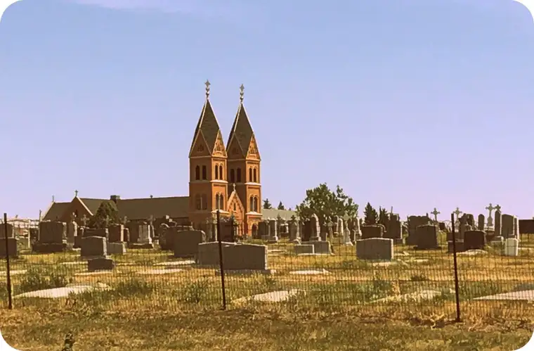
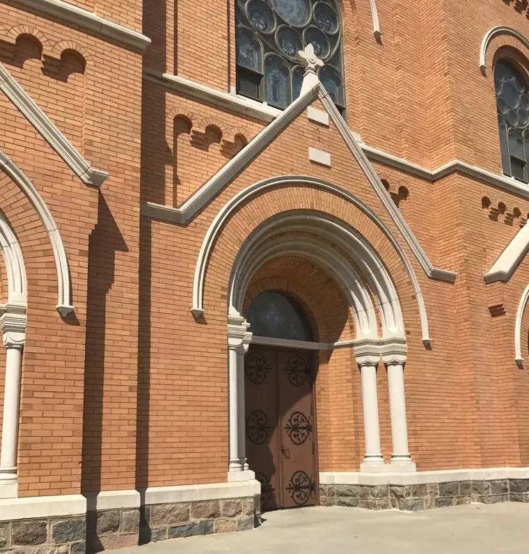
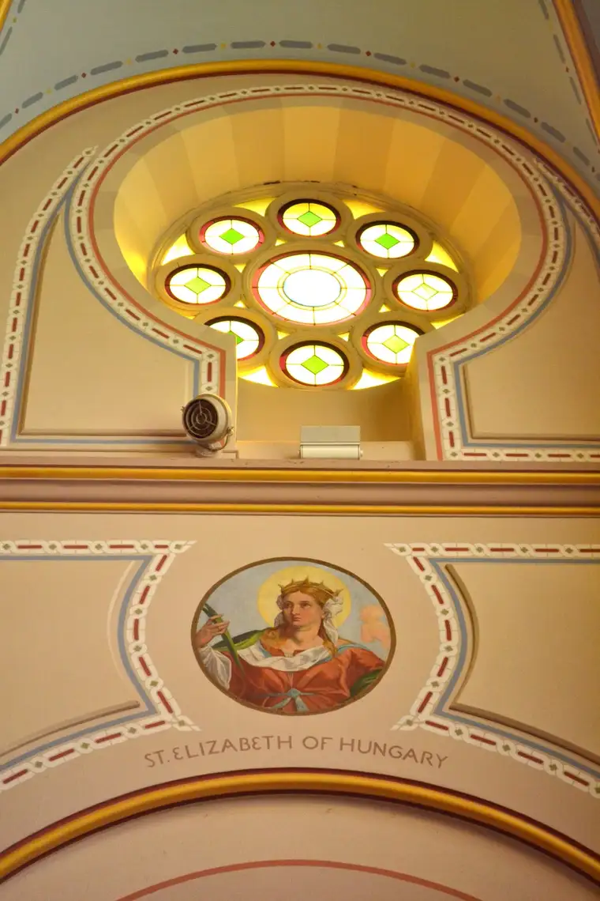

The Northern Plains are a curious thing. For years, we dread the flooding of our land, and then suddenly, it’s not an abundance of water but the lack thereof that plagues us.
Such has been the case this summer, when farmers from some parts of North Dakota are selling livestock to stay afloat in the dust, or gratefully receiving donated hay from other places who generously give.
It is a time when we are reminded, as we often are, that we are to rely on the Lord’s hand, not our own.
Our eastern North Dakota area was somewhat spared earlier in the season, but recently, the moisture ended and we were crying out with the western part of the state for rain.
But the western region remains the most moisture-deprived. And it was on a particularly hot day recently that my mother and friend, along with my two youngest boys and I, made our way into that scorched section to attend a 50th anniversary celebration of a Benedictine sister-friend, near Richardton.
Our visit at the Sacred Heart Monastery and the accompanying celebration proved a lovely experience, but I couldn’t get out of my mind the spires of the nearby Assumption Abbey. So after the celebration, I convinced the rest of the crew to stop there, too, for just a bit.

I’d been to the abbey before, and, in fact, am featuring it as part of my forthcoming children’s book, “12 Days of Christmas in North Dakota,” by Sterling Publishing. It seemed right to touch down again at this place that will become part of this soon-to-release book, even if on a less-than-wintry day, with temperatures soaring to 102 degrees F.
As we pulled into the parking lot, the sun rose high and hot, reflecting in the windows of the abbey.
I hurried toward the doors, seeking relief.

And relief I found. In the quiet midday, the baptismal font beckoned, offering immediate reprieve.
I groped toward it, allowing the sounds of running water fill me up. From there, my eyes wandered to the front of the altar, where he hung.
The day before, we’d been to a production of “The Wizard of Oz” in the my father’s hometown of New Rockford, N.D. Here, the yellow-brick road seemed to return, and that old story suddenly took on new meaning to me. “Follow the yellow brick road.” And there, at its end, was the real “wizard” hanging front and center – the one who actually delivers on his promises.
My mother couldn’t resist a moment before his downcast gaze. As the dripping of water continued, I thought of his words, “I thirst.” He thirsts, yet wishes to quench ours. How beautiful. How very God.
Soon, I found myself wandering about in the quiet, relishing the light-infused, cool interior of this place planted here, in the middle of nowhere. Or so it might seem to many. For the monks who built this place, and the many who have likewise found rest and hope here, it’s certainly somewhere.

We were not alone. Those who had gone before, and inspired the creation of this building, were with us, too, whispering welcomes, like St. Benedict.
And of course, Jesus himself was encamped here in the “tent,” ready to bring solace to the weary traveler through his body and blood.

I wanted to hold this moment for later. I wanted to bring home this short peek into an abbey in the middle of the hot prairie which had brought such sweet reprieve.
Though I have lived through times of a water-logged world, too, in this place and space in time, I found the water life-giving, and sensed it as God’s nearby presence, and assurance of provision.
Later, I looked up Scripture passages to exemplify my feeling. This excerpt from Isaiah 58:11 seemed particularly fitting:
“And the Lord will…satisfy your desires in scorched places…”
Thank you, Lord, for your the water of life you offer that spills out like a cool, quiet spring into our worn lives. Thank you for satisfying my desire to be aptly quenched in this scorched place.
There are many other passages about the Lord bringing water for relief, including the 25 I found on this blog post .
Before leaving the abbey, I captured this brief video to share with others, so that they might not only see but hear the refreshment I experienced at the abbey.
May it wash over the parched areas of your soul. May it restore your hope. May it bring you a moment of replenishment.
Question: When did you find refreshment in a scorched place of late?